MiRA: A Subgoal-driven Framework for Improving Long-Horizon LLM Agents — Detailed Technical Review
Paper: A Subgoal-driven Framework for Improving Long-Horizon LLM Agents
Authors: Taiyi Wang, Sian Gooding, Florian Hartmann, Oriana Riva, Edward Grefenstette
Affiliation: Google DeepMind
Published: March 20, 2026 (arXiv: 2603.19685)
Reviewer: Zhongzhu Zhou
Review Date: March 23, 2026
I. Prerequisites: What You Need to Know
Before diving into the paper's contributions, let us establish the foundational concepts necessary for understanding the MiRA framework. This section is designed to make the paper accessible even if you are new to the intersection of LLM agents and reinforcement learning.
1.1 What Are LLM Agents?
A Large Language Model (LLM) agent is an autonomous system built on top of a large language model that can interact with external environments—not just generate text, but actually do things. Imagine asking an AI assistant to book a flight online: it needs to open a browser, search for flights, select seats, fill out forms, and complete payment. This chain of sequential, interdependent operations constitutes a "long-horizon task."
Unlike traditional chatbots, LLM agents must:
- Perceive the environment: understand the current webpage (DOM trees, screenshots)
- Plan actions: decide what to do next
- Execute operations: click buttons, type text, scroll pages
- Maintain context: remember what has been done to make coherent decisions
1.2 Web Navigation: Why Is It So Challenging?
Web navigation is one of the most demanding testbeds for LLM agents. A typical task might be: "Find the nearest cafe within 50 miles of CMU on the map." Despite seeming straightforward, this requires the agent to:
- Open the map application
- Search for "CMU"
- Find nearby restaurant options
- Apply a distance filter (<50 miles)
- Identify a cafe from the results
- Report the information
Key difficulties include:
- Dynamic content: web pages change in real-time as the agent interacts
- Long action sequences: a single task may require 10–30 steps, any of which can go wrong
- Error compounding: one early mistake cascades like dominoes through all subsequent steps
- Sparse rewards: the agent receives feedback only at the very end (success or failure), with no signal for intermediate steps
1.3 Reinforcement Learning Foundations
Reinforcement Learning (RL) is a machine learning paradigm where an agent learns optimal behavior through trial-and-error interaction with an environment. The key components:
- Agent: the learner and decision-maker
- Environment: the world the agent interacts with (here: a web browser)
- State : the current situation (current webpage + action history)
- Action : what the agent can do (click, type, scroll, etc.)
- Reward : feedback signal from the environment
- Policy : the mapping from states to actions
The Sparse Reward Problem: In web navigation, rewards are extremely sparse—binary 1 (success) or 0 (failure) at the end of an episode. Imagine learning to cook a 20-step recipe where you only find out if the dish tastes good after eating the final product. The agent cannot determine which specific steps contributed to success or failure. This is the credit assignment problem that MiRA directly addresses.
1.4 Partially Observable Markov Decision Processes (POMDPs)
Web navigation is formalized as a POMDP, defined by the tuple :
- : latent environment states (e.g., server-side databases, hidden DOM elements)
- : action space (click, type, scroll, etc.)
- : observation space (rendered HTML, screenshots, task instructions)
- : state transition function
- : observation function
- : reward function
- : finite horizon
The critical point is that the agent cannot directly observe the full environment state—it must infer progress from partial observations.
1.5 Reward Shaping
Reward shaping is a classic technique for mitigating the sparse reward problem. Potential-Based Reward Shaping (PBRS) augments the reward signal by introducing a potential function :
Intuitively, if the next state has higher potential than the current state, the agent is moving in the right direction and receives a bonus. This provides denser feedback without (in theory) changing the optimal policy.
1.6 Subgoal Decomposition
Subgoal decomposition breaks a complex, long-term goal into smaller, verifiable intermediate objectives. For example, "find the nearest cafe near CMU on the map" becomes:
- Subgoal 1: Open the map
- Subgoal 2: Search for CMU
- Subgoal 3: Apply the 50-mile filter
- Subgoal 4: Identify the nearest cafe
This decomposition makes long-horizon planning more tractable and provides verifiable checkpoints for measuring intermediate progress.
1.7 Value Functions and Critics in RL
A value function estimates the expected cumulative future reward from state . A critic is a neural network that learns this value function. In actor-critic methods, the critic evaluates how good the agent's actions are, while the actor (policy network) decides what actions to take. MiRA introduces a novel dual-critic architecture with distinct roles for each critic.
II. What This Paper Does: Core Contributions
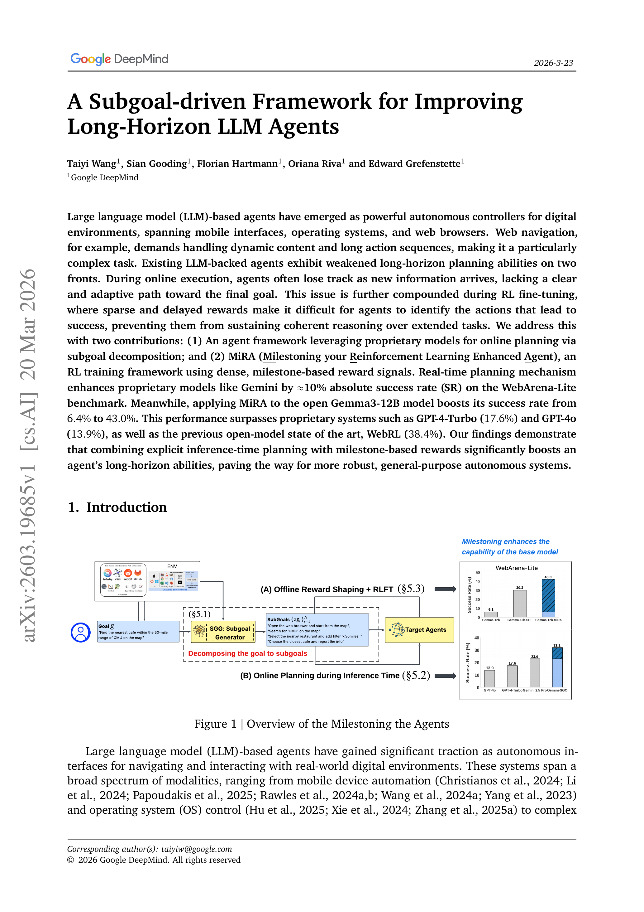
2.1 The Core Problem
Existing LLM web agents suffer severe performance degradation on long-horizon tasks. Through rigorous quantitative analysis, the paper reveals a critical finding: nearly 50% of failures occur because agents get "stuck midway" through tasks—falling into repetitive, non-productive action loops and failing to identify the next meaningful milestone.
2.2 Three Main Contributions
- Automated Failure Analyzer: A systematic tool for diagnosing and categorizing failure modes in web navigation agents
- Inference-Time Subgoal Planning (SGO): Lightweight subgoal-guided planning integrated into the agent's inference loop
- MiRA Training Framework: Milestone-based offline RL fine-tuning with dense intermediate reward signals
III. Methodology in Depth
3.1 Automated Failure Analysis: Diagnosing the Root Cause
Before proposing solutions, the paper conducts a thorough diagnostic study. The authors build an automated analyzer powered by Gemini-2.5-Flash that performs three core functions:
Function 1: Trajectory Evaluation and Summarization Based on hardcoded behavioral rules, the analyzer objectively determines whether a trajectory failed and produces a factual summary (e.g., "Agent navigated to Hollidaysburg page. Agent extracted information. Agent failed to move forward and terminated. Final benchmark check: FAILED.").
Function 2: Prioritized Rule-Based Categorization
Failed trajectories are classified into four mutually exclusive categories (applied in strict priority order):
| Category | Rule |
|---|---|
| Stop at Wrong Page | Agent called exit() but answer was judged incorrect |
| Get Stuck Midway | Repetitive pattern: identical last N actions, or short sequence repeating M times |
| Fail to Make Reasonable Attempt | Reached right page but didn't try exit(), or failed very early |
| Others | General deviation not matching above rules |
Function 3: Identifying the Key Decision Step The analyzer aligns the failed trajectory against reference success traces from (1) teacher demonstrations and (2) peer golden paths. It searches for the First Point of Significant Divergence—the earliest timestep where the agent's action semantically contradicts the reference strategy. Two divergence patterns are detected:
- Semantic Deviation: choosing a link/query that conceptually drifts from successful traces
- Stagnation and Loop Onset: detecting cyclic sub-graphs and marking the loop entry point
Validation: On 40 manually labeled examples, the analyzer achieves 92.5% agreement with human annotators (37/40), with 100% accuracy on "Stuck Midway" and "Wrong Termination" categories.
Key Finding: Across all tested models (Gemini-2.5-pro, Gemma, Gemma-SFT), "Get Stuck Midway" is the dominant failure mode, accounting for 42%–49% of all failures. This finding directly motivates the MiRA framework design.
3.2 Subgoal Generation: Building a Reliable Progress Signal
Methodology: The teacher model (Gemini-2.5-pro) generates subgoals given a high-level task description and the current web state. An iterative in-context learning strategy is employed with 2 curated few-shot demonstrations per website category, with randomized distribution to prevent positional bias.
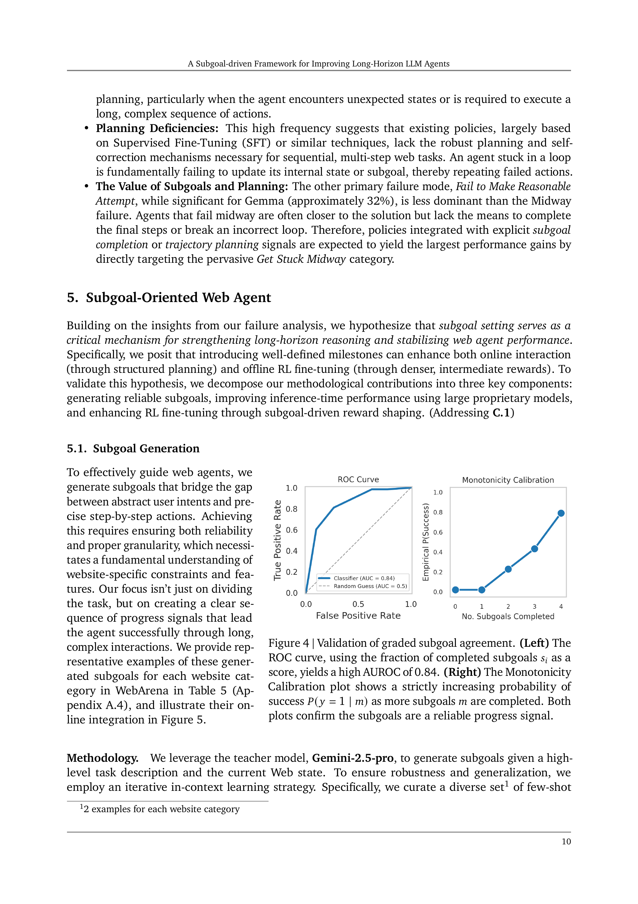
Subgoal Quality Validation (Figure 4):
The paper validates subgoals on two levels:
-
Exact Equivalence (Does completing all subgoals = success?):
- Equivalence-F1: 0.6847
- Precision: 0.7917 (completing all subgoals strongly indicates success)
- Recall: 0.6032 (agents sometimes succeed via alternative paths)
-
Graded Agreement (Is partial completion a reliable progress indicator?):
- AUROC = 0.84: Subgoal completion effectively rank-orders trajectories
- Strict monotonicity: More completed subgoals → strictly increasing success probability
- Kendall's τ = 0.4585 (p < 0.001)
Conclusion: Subgoals are not rigid constraints but provide a dense, calibrated progress signal.
3.3 Inference-Time Dynamic Milestoning (SGO)
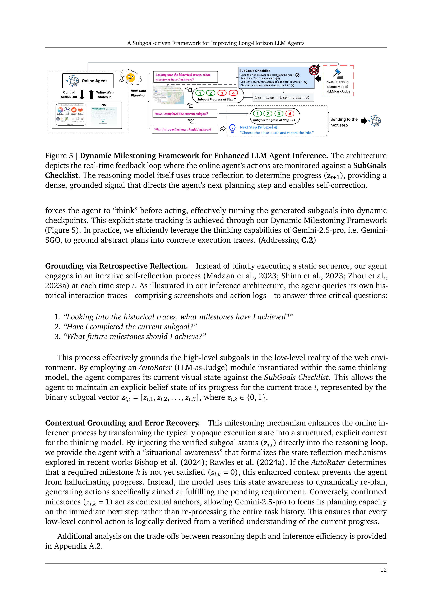
The SGO framework forces the agent to "think before acting" by converting subgoals into dynamic checkpoints. At each timestep , the agent performs retrospective reflection by answering three critical questions (Figure 5):
- "What milestones have I achieved?" — Review the action history
- "Have I completed the current subgoal?" — Use AutoRater (LLM-as-Judge) verification
- "What milestones should I achieve next?" — Plan the immediate next action
The agent maintains an explicit progress vector where .
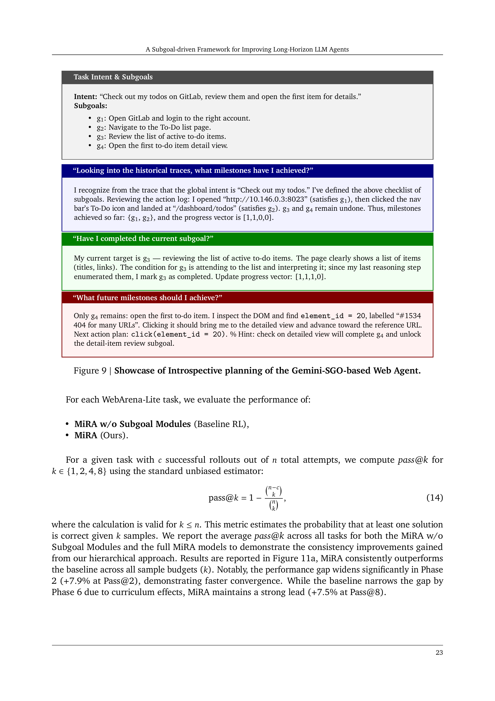
Concrete Example (Figure 9 — GitLab Todo Task):
Task: "Check out my todos on GitLab, review them and open the first item for details."
The agent's introspective reasoning:
"Reviewing the action log: I opened the GitLab homepage (satisfies g₁), clicked the To-Do nav icon and reached /dashboard/todos (satisfies g₂). Progress vector: [1,1,0,0]. Current target is g₃ — reviewing the list. The page shows a list of items with titles and links. Since I've enumerated them, I mark g₃ as completed: [1,1,1,0]. Only g₄ remains. I find element_id=20 labeled '#1534 404 for many URLs'. Next action: click(element_id=20)."
Error Recovery Mechanisms:
- If a required milestone is unsatisfied (), the agent is prevented from hallucinating progress
- Confirmed milestones act as contextual anchors, focusing planning on the immediate next step
- Dynamic re-planning when progress stalls or deviates
3.4 The MiRA Training Framework: Milestone-Driven RL
MiRA is the paper's central technical contribution, introducing a dual-critic architecture that integrates subgoal feedback into RL training.
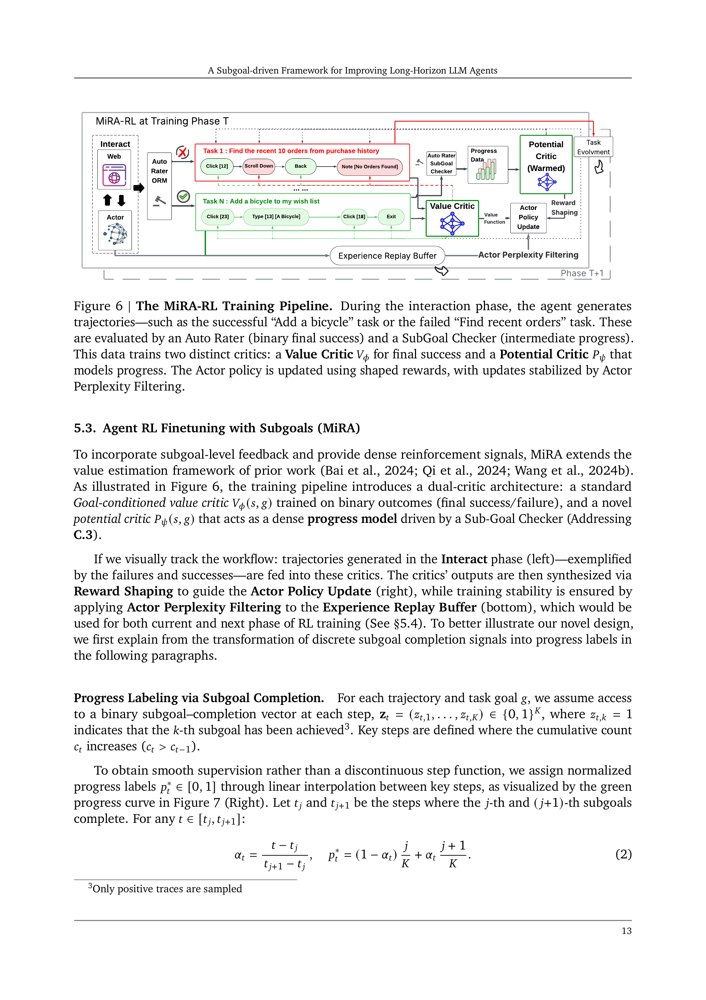
3.4.1 Dual-Critic Architecture (Figure 6)
Two independent critic networks with distinct roles:
-
Value Critic : Trained via binary cross-entropy on final success/failure outcomes
-
Potential Critic : Trained via MSE regression on progress labels
3.4.2 Progress Label Construction
Discrete subgoal completions are transformed into smooth, continuous progress labels through linear interpolation. Given the -th and -th subgoals completing at timesteps and :
Worked Example: For a trajectory with subgoals completing at and , with episode termination at :
- Segment 1 (): Progress ramps
- Segment 2 (): Progress ramps
- Segment 3 (): Progress ramps (final subgoal anchored to trajectory end)
The gap anchoring technique ensures the potential critic learns a monotonically increasing value function that drives the agent through final verification steps to the sparse terminal reward.
3.4.3 Auxiliary Reward Shaping
During RL, the potential critic provides auxiliary shaping rewards:
Critical Design Principle: The subgoal-based potentials are strictly auxiliary. The main value critic is trained solely on true task rewards. Furthermore, shaping signals are derived only from positive traces (trajectories that ultimately succeed), ensuring subgoal completion is statistically correlated with task completion. If a subgoal does not correlate with success, its shaping influence naturally diminishes.
3.4.4 Policy Optimization: MSE Regression
MiRA adopts a distinctive policy update strategy—treating the policy update as a regression problem on log-probability ratios:
Why MSE Over KL Divergence?
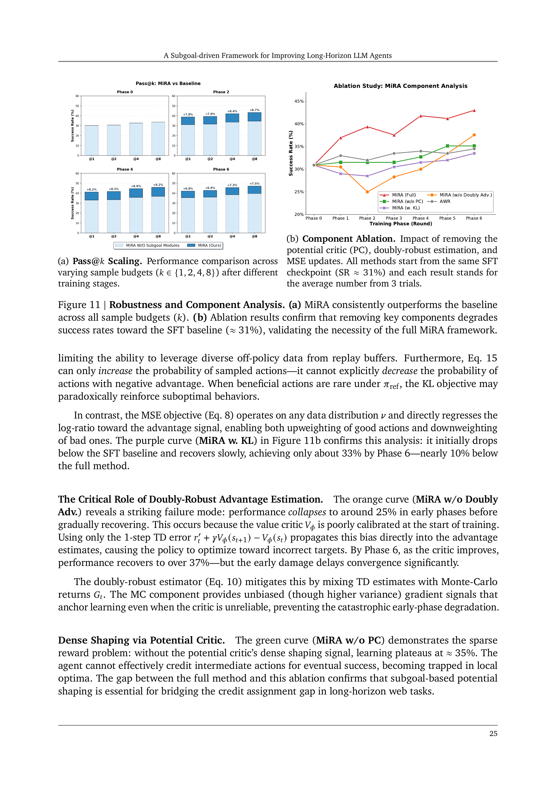
This is a critical design decision validated by ablation (Figure 11b):
- KL divergence requires training data sampled from (on-policy constraint)
- KL can only increase probability of sampled actions—it cannot explicitly decrease probability of negative-advantage actions
- MSE operates on any data distribution and directly regresses log-ratios toward advantages, enabling both upweighting of good actions and downweighting of bad ones
- The KL variant initially drops below the SFT baseline and recovers only to ~33% by Phase 6—nearly 10% below the full method
The gradient interpretation reveals three mechanisms:
- Advantage-guided update: increases action probability; decreases it
- KL-constrained regularization: prevents excessive deviation from the reference policy
- Off-policy capability: expectation taken over any data distribution
3.4.5 Doubly-Robust Advantage Estimation
The advantage target mixes a 1-step TD error with a full Monte-Carlo return:
This balances the low variance of TD learning with the unbiased nature of MC returns. The ablation shows this is essential: without it, performance collapses to ~25% in early phases due to poorly calibrated critic bias, before slowly recovering.
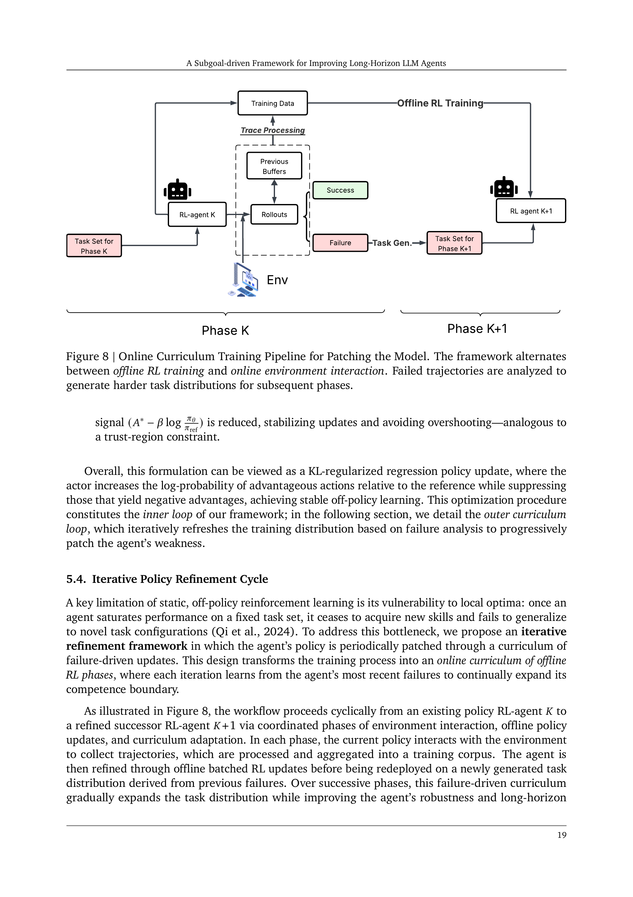
3.5 Iterative Policy Refinement Cycle (Figure 8)
MiRA uses an iterative curriculum learning approach:
- Current policy interacts with the environment, collecting trajectories
- Failed trajectories are analyzed to generate harder task distributions
- Policy is refined through offline batched RL updates
- Redeployed on the new task distribution
- Repeat
This "online curriculum of offline RL phases" prevents saturation on fixed task sets.
IV. Experimental Setup and Results
4.1 Setup
- Benchmark: WebArena-Lite (165 tasks across 5 domains: Shopping Admin(35), Map(26), Shopping(45), Reddit(19), Gitlab(30))
- Why WebArena-Lite? The full 812-task WebArena has many underspecified tasks and unstable evaluations. WebArena-Lite ensures failures reflect agent reasoning rather than environment faults. Evaluation time: ~40 minutes vs. 6+ hours.
- Baselines: GPT-4-Turbo, GPT-4o, Gemini-2.5 family, Llama-3.1 (8B), Gemma-3 (12B), with SFT/AWR/DigiRL/WebRL training methods
- Training protocol: All learning-based methods initialized from the same SFT checkpoints
4.2 Main Results (Table 3)
Proprietary Models:
| Model | Average SR |
|---|---|
| GPT-4-Turbo | 17.6% |
| GPT-4o | 13.9% |
| Gemini-2.5-flash | 20.6% |
| Gemini-2.5-pro | 23.0% |
| Gemini-2.5-pro-SGO (Ours) | 32.1% |
Open-Source Models (12B scale):
| Model | Gitlab | CMS | Map | OSS | Avg. SR | |
|---|---|---|---|---|---|---|
| Gemma3 + SFT | 52.6 | 40.0 | 42.9 | 23.1 | 17.8 | 30.9 |
| Gemma3 + DigiRL | 52.6 | 46.7 | 37.1 | 34.6 | 20.0 | 33.3 |
| Gemma3 + WebRL | 68.4 | 43.3 | 40.0 | 30.8 | 20.0 | 35.1 |
| Gemma3 + MiRA | 73.7 | 56.7 | 54.3 | 30.8 | 28.9 | 43.0% |
Key Takeaways:
- MiRA at 43.0% substantially outperforms WebRL (35.1%) and DigiRL (33.3%)
- SGO boosts Gemini-2.5-pro from 23.0% → 32.1% (~10% absolute improvement)
- The 12B open-source Gemma3 + MiRA surpasses all proprietary systems including GPT-4-Turbo (17.6%) and GPT-4o (13.9%)
- Particularly strong on Gitlab (56.7%) and Shopping Admin (54.3%) — domains requiring strict procedural dependencies
4.3 Failure Mode Redistribution (Table 4)
| Failure Mode | Gemini Flash | Gemini Pro | Gemini SGO |
|---|---|---|---|
| Stuck Midway | 45.12% | 48.41% | 39.87% |
| Wrong Termination | 10.98% | 9.52% | 12.03% |
| Fail Attempt | 12.20% | 6.35% | 6.96% |
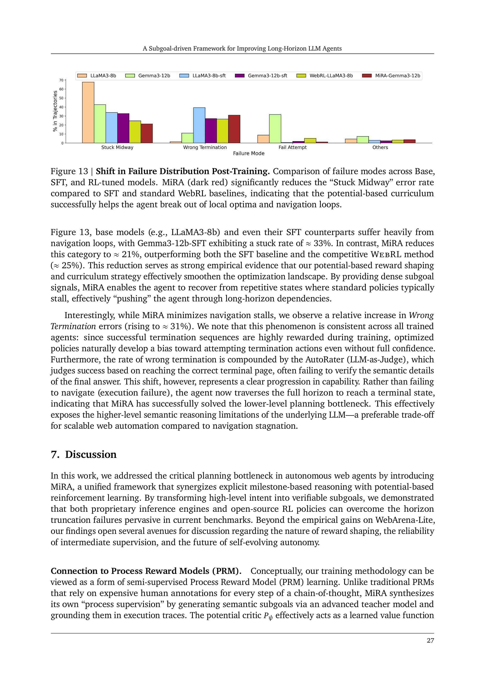
Post-MiRA training (Figure 13): "Stuck Midway" drops from ~33% (SFT) to ~21%, while "Wrong Termination" rises to ~31%. This represents a qualitative improvement: the agent now traverses the full horizon to reach terminal states (higher-level semantic failure) rather than getting stuck navigating (lower-level execution failure).
4.4 Ablation Study (Figure 11b)
| Variant | Phase 6 SR |
|---|---|
| MiRA (Full) | ~43% |
| MiRA (w/o Potential Critic) | ~35% |
| MiRA (w. KL Divergence) | ~33% |
| MiRA (w/o Doubly-Robust Adv.) | ~37% |
| AWR | ~32% |
Each component addresses a distinct failure mode:
- MSE objective: enables off-policy learning and bidirectional probability adjustment
- Doubly-robust estimator: prevents catastrophic early-phase collapse from critic bias
- Potential critic: provides dense supervision needed for long-horizon credit assignment
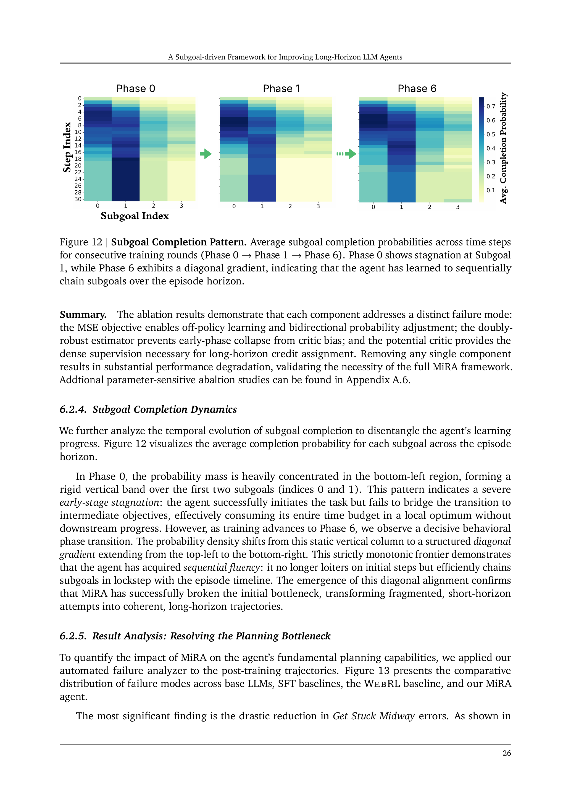
4.5 Subgoal Completion Dynamics (Figure 12)
This is one of the paper's most insightful visualizations. The heatmaps show average subgoal completion probabilities across timesteps:
- Phase 0: Probability mass concentrated in bottom-left → rigid vertical band over first two subgoals → agent stagnates early, consuming its entire time budget without downstream progress
- Phase 6: Structured diagonal gradient from top-left to bottom-right → agent has acquired sequential fluency, efficiently chaining subgoals in lockstep with the episode timeline
The transition from "vertical stagnation" to "diagonal progression" visually demonstrates MiRA breaking the initial bottleneck.
4.6 Pass@k Scaling (Figure 11a)
MiRA consistently outperforms the baseline across all sample budgets (). The performance gap widens significantly in Phase 2 (+7.9% at Pass@2), demonstrating faster convergence. While the baseline narrows the gap by Phase 6, MiRA maintains a +7.5% lead at Pass@8.
4.7 Inference Efficiency
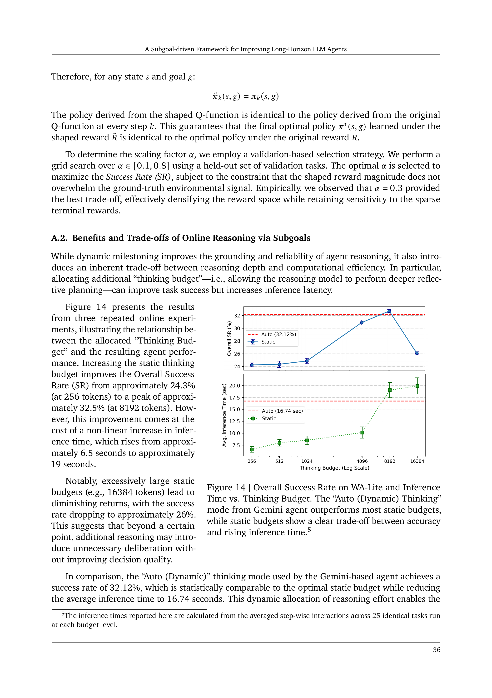
Analysis of "Thinking Budgets" (Figure 14):
- Static compute: success peaks at ~32.5% with 8192 tokens, but inference latency exceeds 19 sec/step
- SGO's Auto (Dynamic) strategy: achieves comparable success (~32.1%) with significantly lower latency
- The framework succeeds not by scaling inference compute, but by intelligently distributing the burden between amortized offline training costs and targeted online reasoning
4.7 Pass@k Scaling Analysis (Figure 11a)
The Pass@k metric measures the probability that at least one of k sampled attempts succeeds, using the standard unbiased estimator:
where n is the total number of attempts and c is the number of successes.
MiRA consistently outperforms the baseline across all sample budgets:
- Phase 2: The gap reaches +7.9% at Pass@2, demonstrating faster convergence
- Phase 6: While the baseline narrows the gap via curriculum effects, MiRA maintains +7.5% lead at Pass@8
This demonstrates that MiRA improves not only single-attempt success but also overall solution coverage.
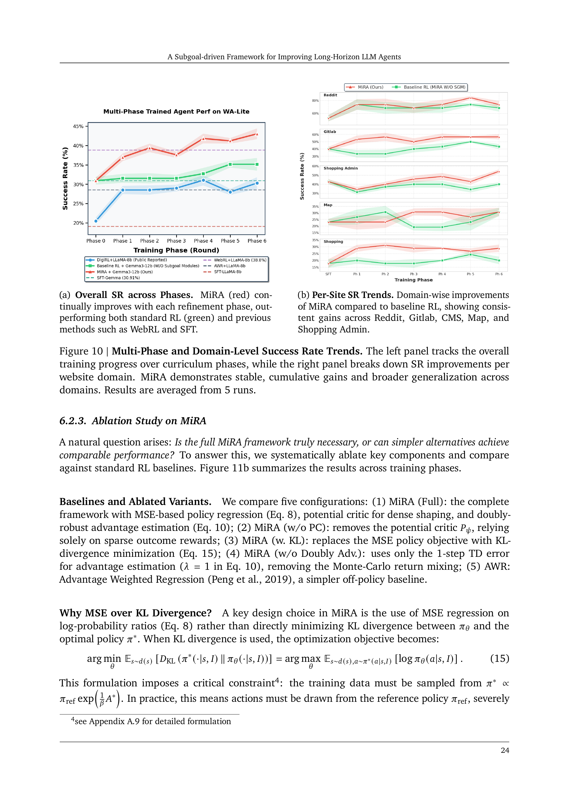
4.8 Multi-Phase Training and Per-Domain Trends (Figure 10)
Overall Trends (Figure 10a): MiRA steadily improves from initial SR ~31% to 43%, while the baseline RL without subgoal shaping saturates near 35%.
Per-Domain Trends (Figure 10b):
- Reddit: SFT 52.6% → MiRA 73.7% (largest absolute gain)
- Gitlab: 40.0% → 56.7% (multi-step procedural dependency tasks)
- Shopping Admin (CMS): 42.9% → 54.3%
- Map: 23.1% → 30.8% (limited improvement, possibly due to special visual-spatial reasoning needs)
- Shopping (OSS): 17.8% → 28.9%
The striking gains on Gitlab and CMS validate the special value of potential-based reward shaping in complex multi-step interactions—these domains require strict adherence to procedural dependencies that purely sparse-reward methods struggle to capture.
4.9 Inference Efficiency: Thinking Budget Analysis (Figure 14)
This analysis reveals an important compute-performance trade-off:
| Thinking Budget (tokens) | Success Rate | Inference Latency |
|---|---|---|
| 256 | ~24.3% | ~6.5 sec/step |
| 1024 | ~27% | ~8 sec/step |
| 4096 | ~30% | ~13 sec/step |
| 8192 | ~32.5% (peak) | ~19 sec/step |
| 16384 | ~26% (drops!) | >20 sec/step |
| Auto (Dynamic) | ~32.1% | ~16.7 sec/step |
Key findings:
- Excessively large static budgets (16384 tokens) cause diminishing or negative returns—extra reasoning introduces unnecessary deliberation
- The dynamic thinking mode achieves comparable success to the optimal static budget with lower latency
- The framework succeeds by intelligently distributing the compute burden between amortized offline training and targeted online reasoning
4.10 Understanding the PBRS Equivalence Proof
The paper provides an important theoretical proof in Appendix A.1: Potential-Based Reward Shaping is equivalent to training with the original reward but initializing the Q-function to the potential function Φ.
Intuitive explanation: Imagine navigating a complex maze. PBRS is like giving you a "height map"—telling you how "high" your current position is relative to the exit. This height information doesn't change where the exit is (optimal policy preserved), but helps you find downhill paths faster (accelerated learning).
Formally, for any goal g and all iteration steps k:
Since Φ(s, g) is a constant with respect to action a, policy invariance is guaranteed:
Practical significance: MiRA's auxiliary reward shaping theoretically does not bias the optimal policy—it only accelerates learning. However, since MiRA uses a learned potential estimate rather than the true potential, strict policy invariance is approximate in practice. The paper mitigates this by (1) restricting shaping to positive traces only, and (2) keeping the main value critic trained solely on true task rewards.
4.11 Potential Critic Training Details
The potential critic construction involves several carefully designed steps:
-
Data Collection: Llama3-8b (WebRL checkpoint) and a vanilla-RL agent (without milestone modifications) perform exploratory rollouts across 1,237 tasks, yielding diverse traces from early failures to complete successes.
-
Progress Label Generation: Post-process trajectories using a subgoal checker to derive dense progress labels for every timestep (not just binary outcomes).
-
Architecture: A pretrained Gemma-12B backbone augmented with an MLP head and sigmoid activation, constraining output to [0, 1].
-
Pre-training: Single-stage supervised learning on the labeled dataset, distilling subgoal logic into a differentiable critic.
-
Continuous Fine-tuning: During RL training, the potential critic continues updating using fresh online rollouts, allowing the potential landscape to co-evolve with agent capabilities.
State Construction: Each state encodes as , appended with the natural-language goal. The paper observes that successful trajectories solving the same task exhibit a stable longest-common subsequence of actions—core semantic steps ("open menu", "locate repository", "click clone") recur with strong regularity. The potential critic learns this structure from data, assigning higher potential to states along successful semantic paths.
4.12 Perplexity Filtering and Experience Replay
An important quality assurance mechanism in MiRA training is perplexity filtering: the current actor policy evaluates the perplexity of each collected trajectory, and those exceeding a dynamic threshold are discarded as out-of-distribution or irrational behavior. This ensures the actor learns only from high-quality data.
The experience replay buffer integrates data from both current and previous phases, enabling cross-phase knowledge accumulation. Each phase performs one epoch of RL training over the collected data, with the buffer maintaining temporal coherence across the curriculum.
4.13 Scaling Factor α Selection
The shaping reward scaling factor α is determined via a validation-based selection strategy:
- Grid search over α ∈ [0.1, 0.8] using held-out validation tasks
- Selection criterion: maximize SR while constraining shaped reward magnitude to not overwhelm the ground-truth signal
- Optimal value: α = 0.3
- Effect: effectively densifies the reward space while retaining sensitivity to sparse terminal rewards
V. Discussion and Insights
5.1 Connection to Process Reward Models (PRMs)
MiRA can be viewed as a form of semi-supervised PRM learning. Unlike traditional PRMs requiring expensive human step-by-step annotations, MiRA synthesizes its own "process supervision" via a teacher model and grounds it in execution traces. The potential critic effectively acts as a learned value function over synthesized milestones. This extends the principle from mathematical reasoning (Lightman et al., 2023) to the noisy, non-stationary domain of web navigation.
5.2 The "Solid Grounding" Trade-off
The efficacy of potential-based shaping hinges entirely on subgoal validity. Because auxiliary rewards trigger only upon successful milestone grounding, the system favors trajectories mastering early task stages. If the agent fails to ground initial subgoals (extreme exploration difficulty or perception errors), the shaping signal remains silent—effectively reverting to sparse rewards. MiRA excels at extending the "competence boundary" but does not solve the cold-start problem.
5.3 Toward Self-Evolving Autonomous Agents
Perhaps the most compelling implication: a single capable model (Gemini-2.5-pro) serves multiple roles simultaneously—planner, executor, judge, curriculum designer, and shaping signal generator. This closed-loop design suggests we are approaching truly self-evolving agents capable of recursive improvement without human intervention, transforming the static "train-then-deploy" paradigm into a lifelong learning process.
5.4 The Wrong-Termination Trade-off: A Dialectical Reading
A fascinating phenomenon emerges from the results: MiRA reduces "stuck midway" errors (from ~33% to ~21%) but the "wrong termination" rate rises to ~31%. This seeming paradox actually represents a qualitative capability upgrade:
- Before MiRA: Agents fail at the navigation level—they cannot even reach terminal states (execution-level failure)
- After MiRA: Agents traverse the full task horizon to reach terminal states but make incorrect final judgments (semantic-level failure)
This is analogous to a student progressing from "cannot understand the problem" to "can work through the problem but gets the final answer wrong"—the latter is clearly a higher level of competence. The shift exposes the underlying LLM's semantic reasoning limitations rather than planning deficiencies.
5.5 Positioning Against Related Approaches
vs. WebRL: Both use RL fine-tuning, but WebRL relies on self-evolving curriculum with sparse rewards. MiRA adds subgoal-driven dense rewards, jumping from 35.1% to 43.0%. The key difference: MiRA optimizes not just the final outcome but explicitly the path to the outcome.
vs. DigiRL: DigiRL uses Advantage-Weighted Regression with instruction-level and step-level dual value functions. MiRA's potential critic provides more precise progress estimates because it is directly grounded in verifiable subgoal completion states.
vs. VSC-RL: VSC-RL uses variational subgoal-conditioned learning with latent representations. MiRA uses explicit, semantically verifiable milestones, offering superior interpretability and reliability.
vs. PRM Approaches (Web-Shepherd, AgentPRM): These use learned process reward models with soft, continuous scores. MiRA replaces soft rewards with hard objectives (binary subgoal completion), avoiding reward over-optimization—a known failure mode of learned PRMs.
5.6 Generalizability Beyond Web Navigation
While MiRA demonstrates results on web navigation, its core idea—decomposing long-horizon tasks into verifiable intermediate milestones and shaping rewards accordingly—is theoretically applicable to other domains:
- Code Generation: Decompose programming tasks into sub-function implementations, verifying progress via test cases
- Scientific Experiment Automation: Decompose experimental protocols into verifiable step sequences
- Game AI: Decompose complex game objectives into phase-level subgoals
- Robotics: Decompose long manipulation tasks into detectable intermediate states
The key prerequisites for transfer: (1) reliable subgoal generation for the target domain, and (2) automated subgoal completion verification.
VI. Limitations and Boundary Conditions
6.1 Subgoal Quality Dependency
- Generation relies on a powerful teacher model (Gemini-2.5-pro)
- Quality may degrade in unfamiliar domains
- Exact equivalence F1 of 0.6847 indicates room for improvement in subgoal coverage
6.2 Cold-Start Problem
- When initial subgoals themselves are hard to reach, shaping signals remain silent
- Framework excels at extending competence boundaries but does not address extreme exploration difficulty
6.3 Evaluation Scope
- Evaluated only on WebArena-Lite (165 tasks)
- No testing on more complex benchmarks (full WebArena, OSWorld)
- Rising wrong-termination rate (~31%) exposes underlying LLM semantic reasoning limitations
6.4 Computational Cost
- Requires teacher model for subgoal generation and evaluation
- Dual-critic architecture increases training complexity
- Iterative refinement cycles require multiple rounds of environment interaction
6.5 Single-Benchmark Evaluation
- Evaluated only on WebArena-Lite (165 tasks, 5 domains)
- Not validated on other web navigation benchmarks (Mind2Web, WebShop, WebGames)
- Cross-benchmark transfer ability remains unknown
- More complex real-world scenarios (multi-tab collaboration, authentication flows, form-heavy tasks) not tested
6.6 Subgoal Generation Scalability
- Current generation relies on manually curated few-shot examples (2 per website category)
- Effective within known website categories but requires additional example design for new domains
- The paper's proposed future direction—learnable or hierarchical subgoal generators—would be critical for addressing this limitation
6.7 AutoRater Reliability
- Subgoal completion judgment depends on LLM-as-Judge (Gemini-2.5-pro), introducing another layer of uncertainty
- While the analyzer achieves 92.5% agreement with humans on failure classification, the accuracy of subgoal completion checking was not independently evaluated
- Systematic bias in the subgoal checker could cause the potential critic to learn a distorted progress landscape
VII. Broader Research Context
7.1 Position in LLM Agent Evolution
MiRA arrives during a period of rapid advancement in LLM agent research. From early approaches like ReAct (interleaving reasoning and acting) to Tree of Thoughts (structured search) to Reflexion (verbal reinforcement learning), the community has progressively explored how to improve LLM long-horizon reasoning. MiRA goes further—it not only enables agents to "think" during inference but also compiles planning capabilities into model weights through RL training.
7.2 The Eternal Tension: Dense vs. Sparse Rewards
MiRA's core insight—transforming sparse terminal rewards into dense intermediate signals—addresses a perennial RL research theme. From early intrinsic motivation and curiosity-driven exploration, through HER and Goal-Conditioned RL, to current subgoal-based reward shaping, researchers have continuously sought better approaches to credit assignment. MiRA's contribution lies in finding an elegant way to combine semantic-level intermediate objectives with RL training in the LLM agent domain.
7.3 Automated Diagnosis as Research Methodology
The failure analysis section deserves special attention—not only because it drives the subsequent method design, but because it demonstrates a research methodology worth promoting. In prior agent research, authors typically report only aggregate success rates, rarely analyzing why agents fail. MiRA's automated failure analyzer provides a reusable diagnostic tool paradigm for the community. Every agent system paper would benefit from including such systematic failure decomposition.
VIII. Reproducibility Assessment
Strengths:
- Uses a public benchmark (WebArena-Lite)
- Detailed training protocol with controlled initialization
- Complete algorithm pseudocode (Algorithms 1 and 2)
- Comprehensive ablations across five variants
Challenges:
- Depends on Gemini-2.5-pro as teacher (proprietary, version-sensitive)
- Subgoal generation prompts only partially shown in appendix
- Pre-training data for the potential critic (1,237-task trajectories) composition not fully specified
- No mention of code/model open-sourcing
IX. Summary and Significance
MiRA is a high-quality research contribution that follows a compelling narrative arc: from diagnosing the problem (failure analysis), to designing targeted solutions (subgoal-driven inference and training), to comprehensive experimental validation.
Core Value Propositions:
- First systematic quantification of web agent failure modes, revealing "stuck midway" as the dominant cause
- A unified framework leveraging subgoals at both inference and training time
- A 12B open-source model outperforming large proprietary systems, demonstrating method efficacy
- The dual-critic architecture with MSE regression provides stable, efficient training
Insights for the Research Community:
- Explicit intermediate supervision is more effective than terminal-only feedback
- Keeping dense shaping signals as auxiliary (not replacing the primary objective) is a key design principle
- Automated failure diagnosis tools should be standard practice in agent research
- The progression from "execution failure" to "semantic failure" represents genuine capability improvement
MiRA points to a clear direction for building more capable autonomous web agents: by structuring long-horizon tasks as verifiable milestone sequences and leveraging this structure in both inference and training, one can significantly improve agent planning and execution in complex, dynamic environments.
This review was completed by Zhongzhu Zhou on March 23, 2026.